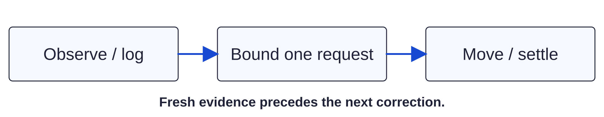

Dry commissioning / observation setup163 / 179
Prepare the native observation kit
The kit includes the built arm64 GPOCapture app. Install its Python dependencies into the same isolated host environment and create a private setup directory.
AddNo new parts
Tools / setupThis Mac · complete kit · same terminal for the next setup pages

- Run from the extracted kit/repository root. Keep the same terminal variables for the following pages.
- Keep setup files and camera sessions outside the public repository.
- Use the shipped app; source rebuild instructions are in the toolkit README if its source or platform changes.
/tmp/gun-positioner-host/bin/pip install -r tools/gun-positioner-observation/requirements.txt GP_OBS=tools/gun-positioner-observation GP_PY=/tmp/gun-positioner-host/bin/python GP_SETUP=~/gpo-setup mkdir -p "$GP_SETUP" ls "$GP_OBS/helper/build/GPOCapture.app"
Ready when
Dependencies install, the named app is present and the private setup directory is writable. A missing app or incomplete installation fails acquisition preparation. Restore the complete kit before identifying cameras.